《血路狂飙》：你加的油是樱桃味还是草莓味？
| 本文作者：Zhang_Yao_Yao | 2017-06-19 20:37 |
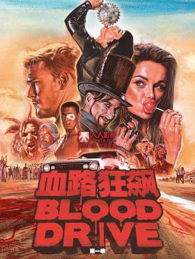
影视作品中，每每提到反乌托邦题材，就总会与资源匮乏，犯罪，社会矛盾密不可分。这类作品通常是只有你想不到的，没有你看不到的，各种超越或是异于现实世界的设定层出不穷，今天给大家推荐的就是这样一部Syfy新剧《血路狂飙》（Blood Drive），剧中血腥，暴力，色情，恐怖，探案元素应有尽有，猛男、美女、靓车、黑科技、重金属音乐、重口味、啪啪啪，保准有一款能挑起你的肾上腺素。

故事发生在未来1999的加利福尼亚（连时间设定都如此不走寻常路），油价飙升，水资源紧缺，用水都是刷卡限量供应。男女主人公本是八竿子打不着的两个人，女主Grace d’Argento（Christina Ochoa饰）是个外表性感会卖萌，口中常含棒棒糖，实则心若蛇蝎，为达目的杀人不眨眼的疯狂车手；
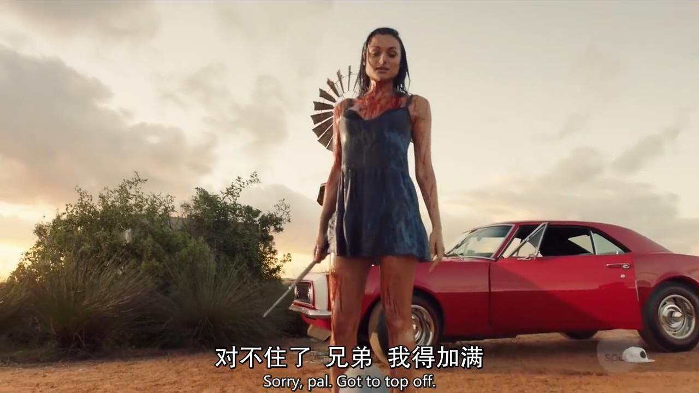
男主Arthur Bailey（Alan Ritchson饰）则工作在外包的警局，被上司称为“圣母”，作为前警察的他三观无比正，且好奇心极强。一次巡逻中，对街头混混胳膊上印子的好奇将他带到心脏公司的一处仓库，阴差阳错地与Grace配对，莫名加入了这场噬血盛宴。
作为血路狂飙竞赛的发起人，同时也是主持人，Julian Slink（Colin Cunningham饰）是一切规则的制定者和幕后操纵者，他简直就是汉尼拔，疯帽子和小丑的结合体，聚光灯下的他是仪式大师，舞台之神，是一切心怀朋克精神的人关注的焦点。
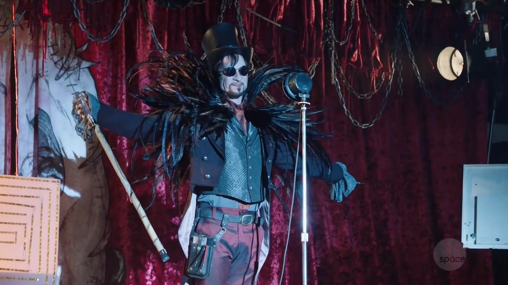
他发起的这场公路竞速赛有一个疯狂的规则，要选手们用人血作为汽车的“燃料”，没人知道他设计这一死亡游戏的真正目的，但一千万的奖金也着实使形形色色的参与者无法拒绝现金的诱惑而趋之若鹜。
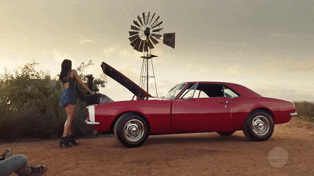
Slink视人命如草芥，为了他的疯狂游戏，活人分分钟被投进绞肉机，果汁果酱满天飞。
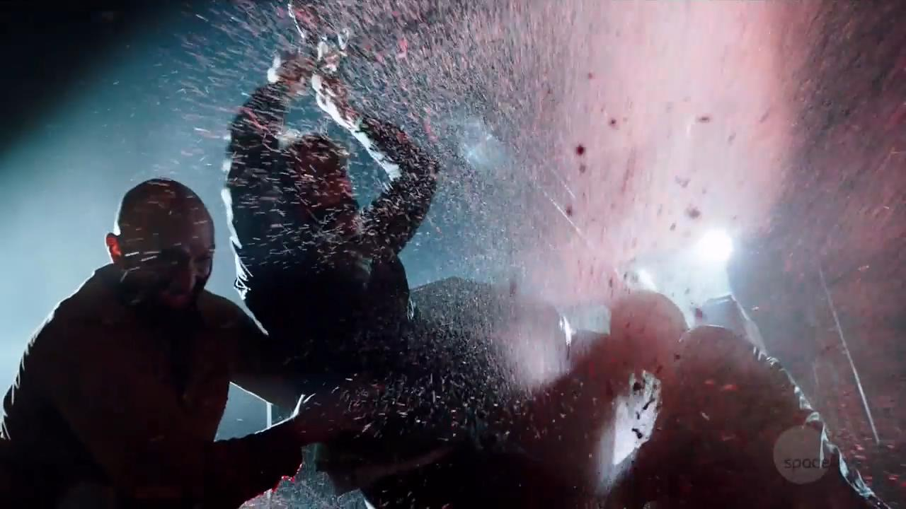
然而他又是个极重视规则的人，比赛细则完全由他制定，选手全程被监控，企图离开赛道或是违反规则的选手都会被他通过脉冲电涌施加“十万伏特”，只有到达高潮的啪啪啪可破，男女主也正是借此在首个赛段逃过一劫。
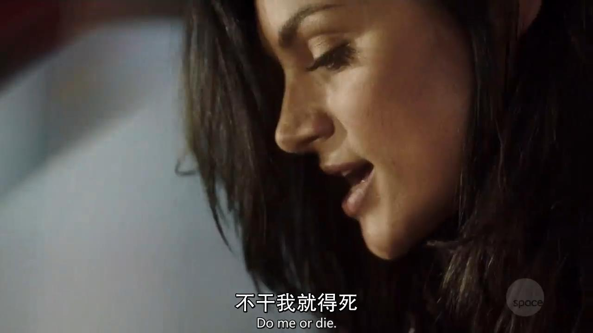
参加比赛的选手可谓个个异于常人，心怀鬼胎，“肋骨”“胖猫王”“绅士”“学者”“小丑迪克”，从外号就可以看出众人各有特点，没一个是善茬，每个人也都有着不为人知的参赛原因。心狠手辣的Grace参加狂飙竞赛并非是为自己，而是为了帮助自己的妹妹，掩藏在冷酷无情深处的其实是一颗善良的心。
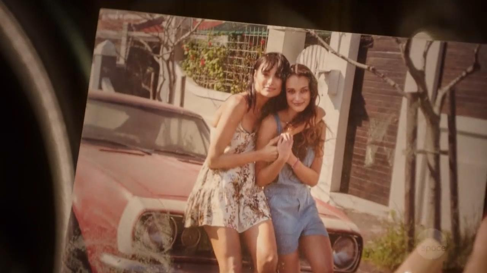
只有Arthur是被迫与女主绑定成为搭档，以救人为己任的他即使在这充满杀戮的赛道上也会路见不平拔刀相助。
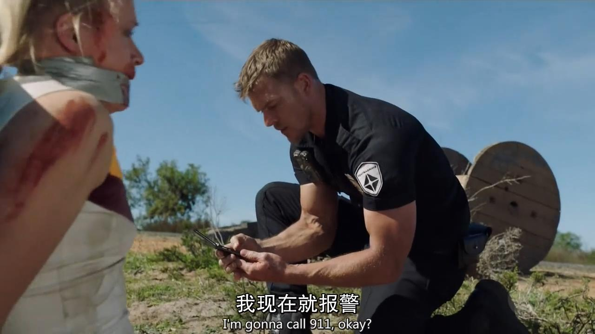
当得知是Slink的心脏公司策划了这场血腥公路赛的时候，他突然意识到，这个世界可能已完全被这家公司掌控，包括他所在的外包警局。
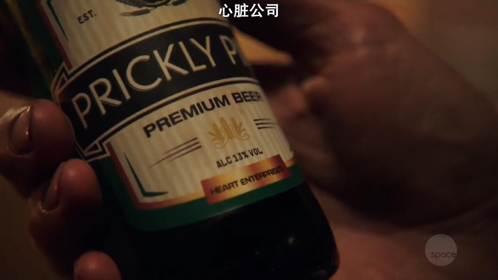
为了搞清心脏公司的真正目的，将坏人绳之以法，Arthur决定加入这场血腥狂飙，等待他们的除了对手间的勾心斗角，还有各个赛段将遭遇的惊悚险情，Arthur能否揭开心脏公司的秘密，让我们在终点线拭目以待。
作为Arthur的警局搭档，Christopher Carpenter（Thomas Dominique饰）虽做不到正义感十足，但至少还未在以牙齿计工作量的警局中彻底堕落，为了查清真相找回同伴，他必须孤身面对扮作同事的Aki（Marama Corlett饰）的挑战，要知道这个小妹妹可是受到伤害时顶多“下面会湿”的不死人造人，要逃过这位真正冷血杀手的魔掌的确需要智勇双全。
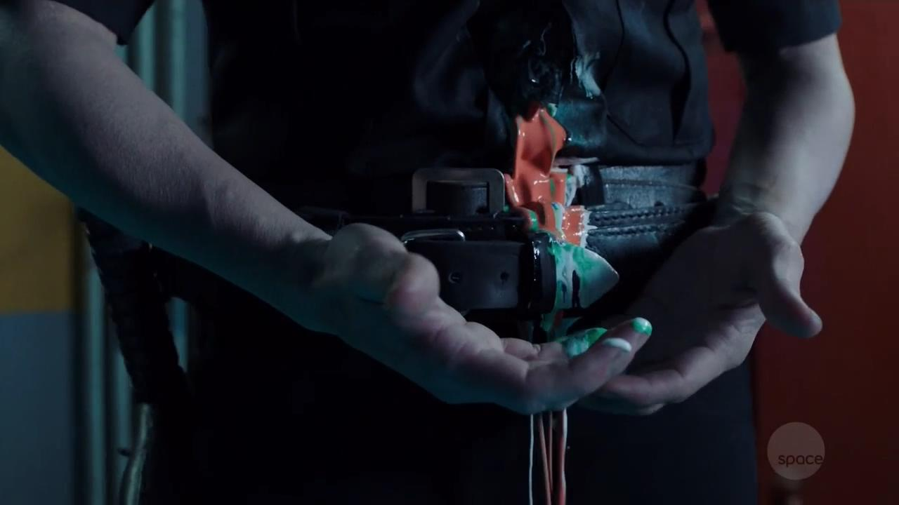
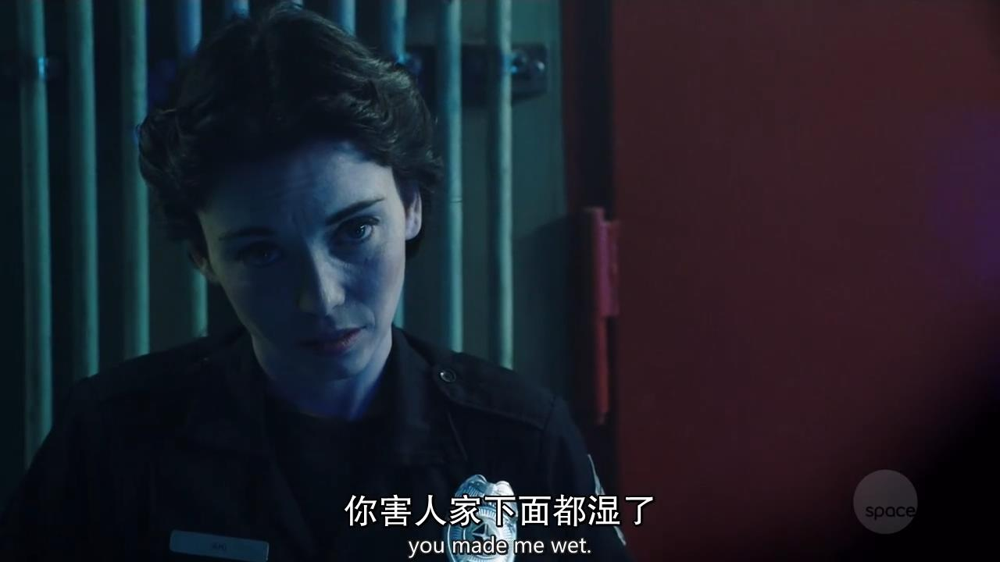
本剧的画面风格一定程度上借鉴了《疯狂的麦克斯：狂暴之路》，甚至以血为燃料的设定，小喽啰脸上的图案以及焰火效果，简直是对那部广受好评的末日电影的致（zhao）敬（ban）。
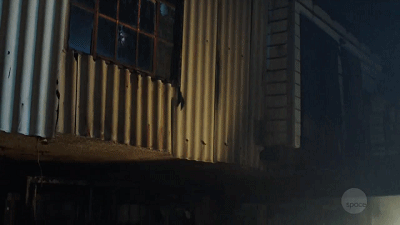
这部剧黄暴元素十足又令人血脉喷张，难怪Syfy会跳过试映直接预订13集，总的来说吸引人的地方还是很多的。剧中的公路剧情始终伴随重金属音乐，朋克风十足，喜欢的朋友千万不要错过。